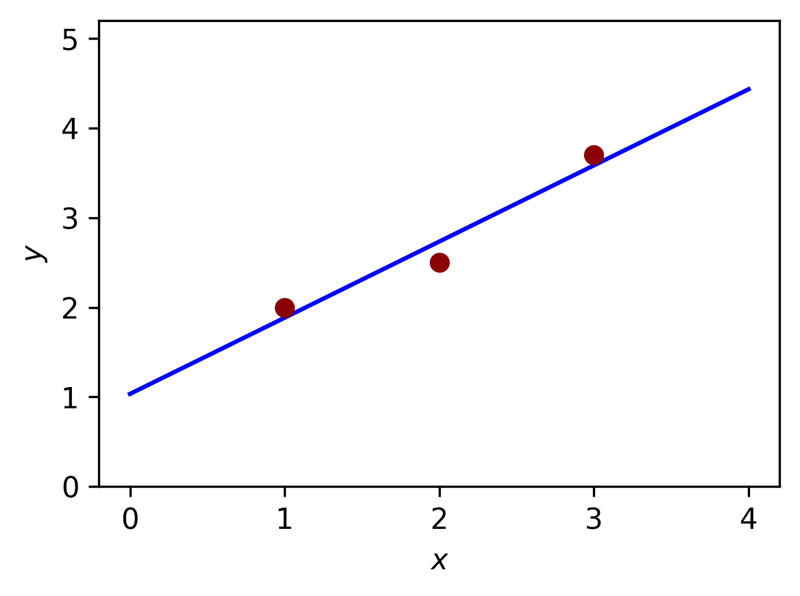

Introducción a la optimización
Capítulo 1 - Sección 1
\[ \def\NN{\mathbb{N}} \def\RR{\mathbb{R}} \def\media{\mathbb{E}} \def\calL{\mathcal{L}} \def\calG{\mathcal{G}} \def\aa{{\bf a}} \def\bb{{\bf b}} \def\cc{{\bf c}} \def\dd{{\bf d}} \def\hh{{\bf h}} \def\qq{{\bf q}} \def\xx{{\bf x}} \def\yy{{\bf y}} \def\zz{{\bf z}} \def\uu{{\bf u}} \def\vv{{\bf v}} \def\XX{{\bf X}} \def\TT{{\bf T}} \def\SS{{\bf S}} \def\bfg{{\bf g}} \def\bftheta{\boldsymbol{\theta}} \def\bflambda{\boldsymbol{\lambda}} \def\bfeta{\boldsymbol{\eta}} \def\bfmu{\boldsymbol{\mu}} \def\bfnu{\boldsymbol{\nu}} \def\bfSigma{\boldsymbol{\Sigma}} \def\bfone{\mathbf{1}} \def\argmin{\mathop{\mathrm{arg\,min\,}}} \def\argmax{\mathop{\mathrm{arg\,max\,}}} \]
La optimización es una herramienta fundamental en matemáticas aplicadas, ciencia de datos y otras disciplinas. En términos generales, el objetivo de un problema de optimización es encontrar el valor de una variable (o conjunto de variables) que minimice o maximice una determinada función, posiblemente bajo ciertas restricciones.
1 Optimización matemática
Definición 1. (Problema de optimización) Un problema de optimización matemática tiene la forma \[ \begin{array}{ll} \text{minimizar } & f(\xx)\\ \text{sujeto a } & \xx\in\Omega. \end{array} \tag{1} \]
donde:
\(f:\RR^n\to\RR\) es la función objetivo.
\(\xx=(x_1,\ldots, x_n)\) son las variables de optimización.
\(\Omega\subset\RR^n\) es el conjunto factible o conjunto de restricciones.
Un vector \(\xx^\star\in\Omega\) se denomina punto óptimo del problema (1) si allí \(f\) alcanza su valor más pequeño en \(\Omega\). A dicho valor lo denominaremos valor óptimo y denotaremos \(f^\star:=f(\xx^\star)\).
En general, se asume que la función objetivo \(f\) es continua. Además, a menudo se suele imponer la condición de que también sea diferenciable.
Por otra parte, son de especial interés los problemas con restricciones funcionales, que son aquellos en los cuales el conjunto factible es de la forma
\[ \Omega=\left\{\xx\in\RR^n\left|\begin{array}{rl} \; g_i(\xx)\leq 0,& i=1,\cdots,r\\ \; h_j(\xx)=0, & j=1,\cdots,m \end{array}\right.\right\}. \]
Es decir, el conjunto \(\Omega\) queda definido a partir de un conjunto de funciones de restricción formado por \(g_i:\RR^n\to\RR\) (\(i=1,\ldots,r\)) y \(h_j:\RR^n\to\RR\) (\(j=1,\ldots,m\)).
Las preguntas que surgen de un problema de optimización son:
¿Existe una solución?
En caso afirmativo, ¿podemos calcularla?
Generalmente, consideramos familias o clases de problemas de optimización, caracterizadas por formas particulares de las funciones objetivo y de las funciones de restricción. Algunos ejemplos importantes son:
Un problema de optimización es un programa lineal si tanto la función objetivo \(f\) como las funciones de restricción \(g_i\) y \(h_j\) son funciones lineales. Es decir, son funciones \(\varphi:\RR^n\to\RR\) que satisfacen la igualdad: \[ \varphi(\alpha\xx+\beta\yy)=\alpha\,\varphi(\xx)+\beta\,\varphi(\yy), \] para todo \(\xx,\yy\in\RR^n\) y para todo \(\alpha,\beta\in\RR\).
Un problema de optimización convexa es aquel en el que tanto la función objetivo como las funciones de restricción son funciones convexas. Es decir, son funciones \(\varphi:\RR^n\to\RR\) que satisfacen la desigualdad: \[ \varphi(\alpha \xx+\beta \yy)\leq \alpha\,\varphi(\xx)+\beta\,\varphi(\yy), \] para todo \(\xx,\yy\in\RR^n\) y para todo \(\alpha,\beta\in[0,1]\) con \(\alpha+\beta=1\).
Comparando los dos ejemplos anteriores, vemos que la convexidad es más general que la linealidad: la desigualdad reemplaza la igualdad más restrictiva, y además la desigualdad debe cumplirse solo para ciertos valores de \(\alpha\) y \(\beta\). Por lo tanto, cualquier programa lineal es un problema de optimización convexa. El estudio de los problemas de optimización convexa lo realizaremos en Capítulo 1 - Sección 2.
Veremos a continuación algunos ejemplos básicos de ejercicios de optimización, que seguramente les resultarán familiares de cursos previos.
Ejemplo 1
\[ \begin{array}{ll} \text{minimizar } & x^2-4x+5\\ \text{sujeto a } & x\in\RR. \end{array} \]

En este problema no se imponen restricciones sobre el valor de \(x\), más alla de que pertenezca al dominio de la función, por lo que se lo denomina un problema sin restricciones. La función objetivo es \(f(x)=x^2-4x+5\).
Como sabemos, el punto óptimo ocurre en el vértice de la función cuadrática, es decir: \[ x^\star=-\frac{-4}{2\cdot 1}=2. \]
El valor óptimo es \(f(2)=2^2-4\cdot 2+5=1\).
Ejemplo 2
\[ \begin{array}{ll} \text{minimizar } & x^3-3x+y^2\\ \text{sujeto a } & (x,y)\in\RR^2. \end{array} \]

En este problema de optimización, la función objetivo es \(f(x,y)=x^3-3x+y^2\). Dado que no hay restricciones, podemos obtener en primer lugar los puntos críticos que anulan el vector gradiente. Tenemos que \[ \nabla f(x,y)=(3x^2-3,2y)=(0,0) \] tiene soluciones \((-1,0)\) y \((1,0)\).
El criterio del Hessiano nos permite evaluar la condición de ambos puntos a partir de la matriz de derivadas de segundo orden: \[ H(x,y)=\begin{pmatrix}6x&0\\0&2\end{pmatrix}. \]
Dicho criterio nos indica que en \((1,0)\) hay un mínimo local, mientras que \((-1,0)\) se descarta por ser punto silla (¿por qué?). No obstante, esto no quiere decir que hallamos encontrado el punto óptimo, ya que nuestro problema de optimización requiere que el valor óptimo sea global.
Es importante remarcar lo siguiente:
Ser mínimo local es una condición necesaria, pero no suficiente, para ser mínimo global.
De hecho, para este problema no hay un punto óptimo, puesto que la función no está acotada inferiormente, tal como se puede apreciar en su gráfica. Analíticamente, notar que para \(y=0\) ocurre que \(\lim_{x\to-\infty}(x^3-3x)=-\infty\).
Ejemplo 3
\[ \begin{array}{ll} \text{minimizar } & x^2+y^2\\ \text{sujeto a } & xy=1. \end{array} \]

En este caso, tenemos una restricción funcional de igualdad definida por \(h(x,y)=xy-1\). Este problema se puede resolver aplicando el método de multiplicadores de Lagrange, el cual consiste en analizar la ecuación \[ \begin{align*} \nabla f(x,y)-\lambda\nabla h(x,y)&=(0,0)\\ (2x-\lambda y,2y-\lambda x)&=(0,0). \end{align*} \]
Los puntos críticos son \((1,1)\) y \((-1,-1)\), ambos con \(\lambda=2\). Al valuar la función objetivo, se obtiene \[ f(1,1)=f(-1,-2)=2. \]
Este es el valor óptimo de la función objetivo en el conjunto factible. En consecuencia, tanto \((1,1)\) como \((-1,-1)\) son puntos óptimos. Este problema se puede interpretar geométricamente como el punto de la hipérbola \(xy=1\) más cercano al origen (¿por qué?).
Los ejemplos anteriores buscan conectar la idea de los problemas de optimización con los ejercicios clásicos de Cálculo, en los que se busca el valor mínimo (o máximo) de una función. Sin embargo, estudiar optimización no se limita a resolver este tipo de ejercicios, sino que implica aprender a formular problemas, comprender sus componentes fundamentales y desarrollar herramientas teóricas y computacionales para abordarlos, incluso cuando no tienen solución analítica o presentan múltiples soluciones.
La optimización matemática es una herramienta poderosa para tomar la mejor decisión posible al elegir un vector \(\xx\) dentro de un conjunto de opciones, bajo ciertas restricciones que representan requisitos firmes, y buscando minimizar un costo o maximizar una utilidad. Algunas aplicaciones son:
Optimización de portafolios financieros: Se busca la mejor manera de invertir un determinado capital entre distintos activos. La variable \(x_i\) representa la inversión en el \(i\)-ésimo activo, y las restricciones pueden representar un límite en el presupuesto, el requisito de que las inversiones sean no negativas y un valor mínimo aceptable de rendimiento esperado. La función objetivo podría ser una medida del riesgo total de la cartera.
Ajuste de modelos a datos (data fitting): La tarea es encontrar un modelo, dentro de una familia de modelos potenciales, que se ajuste mejor a un conjunto de datos observados. Aquí, las variables son los parámetros del modelo, y las restricciones pueden representar información previa o límites requeridos en los parámetros. La función objetivo puede ser una medida de error de predicción entre los datos observados y los valores predichos por el modelo.
Optimización en logística: Se busca determinar la mejor forma de mover productos a través de una cadena de suministro o rutas de distribución. Las variables representan las cantidades transportadas entre diferentes puntos, y las restricciones pueden incluir la capacidad de los vehículos, los horarios de entrega y la demanda de los clientes. La función objetivo suele minimizar costos totales, tiempos de transporte o ambas cosas a la vez.
Estas aplicaciones son solo una pequeña muestra de la enorme variedad de problemas prácticos que pueden plantearse como problemas de optimización presentes en áreas como ingeniería, control automático, diseño, finanzas, logística, redes, entre otras.
2 Mínimos cuadrados y programación lineal
Vamos a introducirs dos subclases muy conocidas y ampliamente utilizadas de optimización convexa: los problemas de mínimos cuadrados y la programación lineal.
Definición 2. (Problema de mínimos cuadrados) Un problema de mínimos cuadrados es \[ \begin{array}{ll} \text{minimizar } & \|A\xx-\bb\|_2^2=\sum_{i=1}^k(\aa_i^{\top}\xx-b_i)^2, \end{array} \tag{2} \] donde \(A\in\RR^{k\times n}\) (\(k\geq n\)), \(\aa_i^{\top}\) son las filas de \(A\) y \(\bb\in\RR^n\).
Mostrar detalles
Es un problema de optimización sin restricciones y su función objetivo es una suma de cuadrados de términos de la forma \(\aa_i^{\top}\xx-b_i\).
Se puede reducir a resolver un conjunto de ecuaciones lineales: \[ (A^{\top}A)\xx = A^{\top}\bb, \] de manera tal que tiene solución analítica: \[ \xx^\star=(A^{\top}A)^{-1}A^{\top}\bb. \]
Existen algoritmos para resolver el problema con alta precisión, con un tiempo aproximadamente proporcional a \(n^2k\), con constante conocida.
Para aumentar su flexibilidad en las aplicaciones, se utilizan varias técnicas estándar. En los mínimos cuadrados ponderados, se minimiza \[ \sum_{i=1}^k w_i(\aa_i^{\top}\xx-b_i)^2, \] donde \(w_i\) son positivos. Otra técnica es la regularización, que consiste en agregar términos adicionales a la función objetivo para controlar ciertas propiedades de la solución. El caso más simple es \[ \sum_{i=1}^{k}(\aa_{i}^{\top}\xx - b_{i})^{2} + \lambda \sum_{i=1}^{n}x_{i}^{2}. \] En el Capítulo 2 exploraremos con mayor detalle las técnicas de regularización y sus variantes.
Ejemplo 4
Se tienen los puntos \((1,2)\), \((2,2.5)\) y \((3,3.7)\), y se desea encontrar la recta \(y = mx + b\) que mejor los aproxime en el sentido de mínimos cuadrados. Esto deriva en el problema \[ \begin{array}{ll} \text{minimizar } & \sum_{i=1}^3 (a x_i + b - y_i)^2. \end{array} \]
Cuidado: las variables son los parámetros \(m\) y \(b\). La función objetivo es la suma de los cuadrados de los errores. Matricialmente resulta en \[ \begin{array}{ll} \text{minimizar } & \left\|A\begin{pmatrix}m\\b\end{pmatrix}-\yy\right\|_2^2. \end{array} \] con \[ A = \begin{pmatrix} 1 & 1\\ 2 & 1\\ 3 & 1 \end{pmatrix},\qquad \yy=\begin{pmatrix} 2\\ 2.5\\ 3.7 \end{pmatrix}. \]

La solución analítica es \[ \begin{pmatrix} m^{\star}\\ b^{\star} \end{pmatrix}=\left[\begin{pmatrix} 1 & 1\\ 2 & 1\\ 3 & 1 \end{pmatrix}^{\top}\begin{pmatrix} 1 & 1\\ 2 & 1\\ 3 & 1 \end{pmatrix}\right]^{-1}\begin{pmatrix} 1 & 1\\ 2 & 1\\ 3 & 1 \end{pmatrix}^{\top} \begin{pmatrix} 2\\ 2.5\\ 3.7 \end{pmatrix} = \begin{pmatrix} 17/20 \\ 31/30 \end{pmatrix} \]
Por lo tanto, la recta ajustada es \[ y = \frac{17}{20}x+\frac{31}{30}. \]
Definición 3. (Programación lineal) Un problema de programación lineal es \[ \begin{array}{ll} \text{minimizar } & \cc^{\top}\xx\\ \text{sujeto a } & \aa_i^{\top}\xx\leq b_i,\quad i=1,\ldots,m. \end{array} \tag{2} \] donde \(\cc,\aa_1,\ldots,\aa_m\in\RR^n\) y \(b_1,\ldots,b_m\in\RR\).
Mostrar detalles
No existe una fórmula analítica simple para la solución, pero hay una variedad de métodos muy efectivos para resolver el problema, como el método simplex de Datnzig y los métodos de punto interior.
En la práctica, la complejidad es del orden de \(n^2m\) (asumiento \(m\geq n\)), pero con una constante que está menos caracterizada que en el caso de mínimos cuadrados.
En muchos casos, el problema de optimización original no tiene una forma estándar de programa lineal, pero puede transformarse en un programa lineal equivalente. Por ejemplo, el problema de aproximación de Chebyshev: \[ \begin{array}{ll} \text{minimizar } & \max_{i=1,\ldots,k} |\aa_{i}^{\top}\xx- b_{i}| \end{array} \] con variable \(\xx\in\RR^n\) puede ser resuelto a través del programa lineal \[ \begin{array}{ll} \text{minimizar } & t\\ \text{sujeto a } & \aa_i^{\top}\xx-t\leq b_i,\quad i=1,\ldots,k\\ & -\aa_i^{\top}\xx-t\leq -b_i,\quad i=1,\ldots,k, \end{array} \] con variables \(\xx\in\RR^n\) y \(t\in\RR\).
Ejercicios
Mostrar que el problema de mínimos cuadrados se reduce a \((A^{\top} A)\xx=A^{\top}\xx\).
Reescribir el problema de mínimos cuadrados ponderados como un problema de mínimos cuadrados estándar.
Referencias
Boyd, S., & Vandenberghe, L. (2004). Convex Optimization. Capítulo 1. Cambridge University Press.
Farina, G. Apuntes del curso MIT 6.7220: Nonlinear Optimization. Lección 1(2025). Disponible en la página del curso.